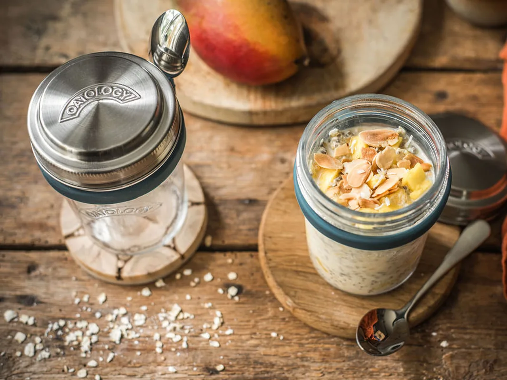

The Best Jars for Overnight Oats
The best jar for overnight oats holds 350 to 500ml of usable space, seals tightly enough to survive a bag, has a wide mouth for stirring and washing, and is glass rather than plastic. That gives 50g of oats and 150ml of milk room to swell, plus space for fruit. Most 0.5L clip-top jars qualify. Bamboo-lidded jars need the bag test before you trust one.
One thing to know before the comparison: we make one of the jars below, so weigh our verdicts accordingly. The rest of the page plays it straight, including the advice to start with a jam jar you already own.

What makes a good overnight oats jar
Seven things separate a jar you use for years from one that ends up at the back of the cupboard. Judge any jar, including ours, against these.
- A genuinely leak-proof seal. Run the bag test: fill the jar with water, seal it, and hold it upside down over the sink for 10 seconds. If it drips there, it will drip in your bag.
- 350 to 500ml of usable capacity. 50g of oats and 150ml of milk look modest in the evening and swell overnight. Add fruit and stirring room, and anything under 350ml gets cramped.
- A wide mouth. You stir in it, eat from it, and wash it. A narrow neck makes all 3 harder every single day.
- Glass over plastic. Glass does not stain, does not hold yesterday's smells, and stays clear through dishwasher cycles that leave plastic cloudy in weeks.
- The right lid material. Tinplate lids rust with daily milk contact. Look for stainless steel or silicone on anything you plan to use every morning.
- Built-in measuring. Either the jar measures the portion for you, or you need scales every night.
- A spoon that travels with it. Only relevant if you eat out of the house.
The best overnight oats jars in the UK, compared
| Jar | Price | Leak-proof | Measures for you | Dishwasher |
|---|---|---|---|---|
| OATOLOGY jar | From £10.99 | Yes, silicone sealing lid | Yes, lid holds 50g of oats, milk line to 300ml | All but the steel lid |
| Kilner or clip-top 0.5L | £3 to £6 | Yes | No | Yes |
| Repurposed jam jar | Free | Usually, lid depending | No | Yes |
| Plastic meal-prep pot | A few pounds | Varies | No | Ages quickly |
| Bamboo-lid jar | Varies | Depends on the silicone ring | No | Jar only, lid hand wash |
OATOLOGY jar, from £10.99
A 450ml glass jar with 350ml of usable fill, and the two-piece lid is the point: the stainless steel outer lid doubles as a measuring cup holding exactly 50g of oats, and milk markings on the back run to 300ml in both ml and US fl oz, so the ratio is built into the jar. A silicone sealing lid underneath makes it leak-proof, and a silicone holder clips a stainless steel spoon to the side. The glass, sealing lid, spoon holder, and spoon are all dishwasher safe; the steel measuring lid is hand wash only. Built for exactly this job, and we would say that, so mark our homework yourself.
Kilner and clip-top 0.5L jars, £3 to £6
Sturdy, cheap, and the rubber-sealed clip-tops hold a proper seal. Nothing on the jar measures anything, so you will need scales every night, and the two-part tinplate lids on the screw-top mason-style versions rust with daily milk contact. A solid choice if you already own scales.
The repurposed jam jar, free
Smaller than ideal: most hold 300 to 370ml to the brim, so 250 to 320ml once you leave stirring room, and the lid is only as good as its condition. But it costs nothing, and that makes it the right way to start: make your first 2 weeks of overnight oats in a jam jar, and spend money only once the habit sticks. If it never does, you have lost nothing.
Plastic meal-prep pots
Light, cheap, and genuinely fine for the first week. Then the staining starts, the pot begins to hold the smell of whatever was in it last, and each dishwasher cycle leaves it a little cloudier.
Bamboo-lid jars
The jars that fill an Amazon search for overnight oats jars with lids. Most rely on a thin silicone ring inside the screw thread, and the seal is only as good as that ring, so run the bag test before trusting one on a commute. Bamboo is also hand wash only.
The jar we make
The OATOLOGY jar is 450ml of glass with the portion system built in: the stainless steel lid measures exactly 50g of oats, the milk markings on the back measure the liquid, and the silicone sealing lid keeps it sealed on the commute. A stainless steel spoon clips to the side, so breakfast leaves the house in one piece.
Get the OATOLOGY jar on Amazon 2-pack, amazon.co.ukYour questions, answered
What size jar is best for overnight oats?
A jar with 350 to 500ml of usable capacity is best for overnight oats. A single portion of 50g oats and 150ml milk swells overnight, and fruit and stirring room push the total towards 350ml. Below that you are stirring with no headroom; above 500ml a single portion looks lost.
Are mason-style or Kilner jars OK for overnight oats?
Yes. Mason-style and Kilner jars work well for overnight oats provided you own scales, because nothing on the jar measures the oats or the milk. One caveat: the two-part tinplate lids on screw-top versions rust with daily milk contact, so check the lid regularly or choose a clip-top with a rubber seal.
Should you make overnight oats in a glass or plastic container?
Glass is the better container for overnight oats. It does not stain, does not hold onto smells, and stays clear through dishwasher cycles that leave plastic cloudy in weeks. With plastic, berry stains and a lingering breakfast smell usually arrive within the first month of daily use. Its one real advantage is weight.
Why does my overnight oats jar leak?
An overnight oats jar leaks because the lid does not actually seal: bamboo lids rely on a thin silicone ring that often seats poorly, and worn or rusted tinplate lids lose their grip. Test any jar with the bag test: fill it with water, seal it, and hold it upside down over the sink for 10 seconds.
What jar do you use in your overnight oats recipes?
We use the OATOLOGY jar in every recipe on this site. We also make it, so bear that in mind. The practical reason we designed it: the steel lid holds exactly 50g of oats and the milk markings on the jar measure the 150ml, so no recipe here needs scales.
Keep reading
- Get the ratio right: the overnight oats ratio, explained, including why we use 50g of oats to 150ml of milk with 1 tbsp of chia, and 130ml without.
- Storage and fridge life: how long do overnight oats last?
- Put the jar to work: start with Peanut Butter & Banana overnight oats or Mango & Coconut overnight oats.
More overnight oats
Eight recipes, all written around the same 50g of oats and 150ml of milk portion.
See all 8 recipes